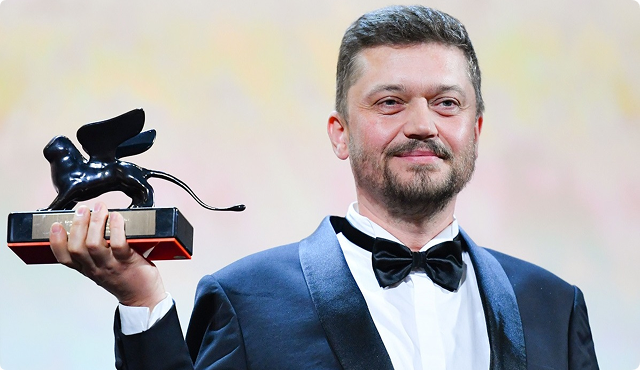

Васянович Валентин
Загальна інформація
Валентин Миколайович Васянович (нар. 21 липня 1971, Житомир) — український режисер,
сценарист та продюсер. Лауреат конкурсної програми Orizzonti / Горизонти (2019; кінострічка
«Атлантида») та номінант головної нагороди Leone d'Oro / Золотий лев (2021; кінострічка
«Відблиск») Венеційського кінофестивалю. Лауреат Національної премії України імені Тараса Шевченка
(2019; кінострічка «Атлантида»)

Біографія
Народився в 1971 році в Житомирі. Закінчив Музичне училище імені Віктора Косенка. Професійний
шлях у кіно починав у Національному університеті театрального мистецтва ім. Карпенка-Карого,
який закінчив у 1995 році з дипломом оператора, а в 2000 році — з дипломом режисера
документального фільму. Займався в творчих майстернях українських кінематографістів Олексія
Прокопенка та Олександра Коваля.
У 2006—2007 роках навчався у Школі режисерської
майстерності Анджея Вайди, Польща.
Громадська позиція
Васянович публічно виступає за розвиток українськомовного контенту в Україні, та за відвоювання
медіапростору від засилля російськомовного та російсько-українського суржикомовного
медіаконтенту. У жовтні 2020 року в інтерв'ю українського видання birdinflight.com Васянович
зазначив, що «суржик — це рак української мови, він є результатом російської експансії в Україну.
Зараз нас перегинають в інший бік: мовляв, що це за мова неправдоподібна, даєш суржик! Навіщо
підтримувати цю хворобу?». Пізніше у грудні 2020 року в інтерв'ю українському виданню lb.ua він
підкреслив, що у мові героїв своїх фільмів йому найважливіше «щоб не було суржику. Я просто не
хочу підтримувати цю традицію і підігрівати тим людям, які кажуть, що „суржик наше все“ і дає
відчуття „українськості“ мови. Я проти цього, я за чисту мову. Там можуть бути матюки, але не
може бути суржику, я з цим борюсь».
Фільмографія
- 1. 2021 Відблиск
- 2. 2019 Атлантида
- 3. 2017 Згода
- 4. 2017 Рівень чорного
- 5. 2014 Плем'я
- 6. 2014 Присмерк